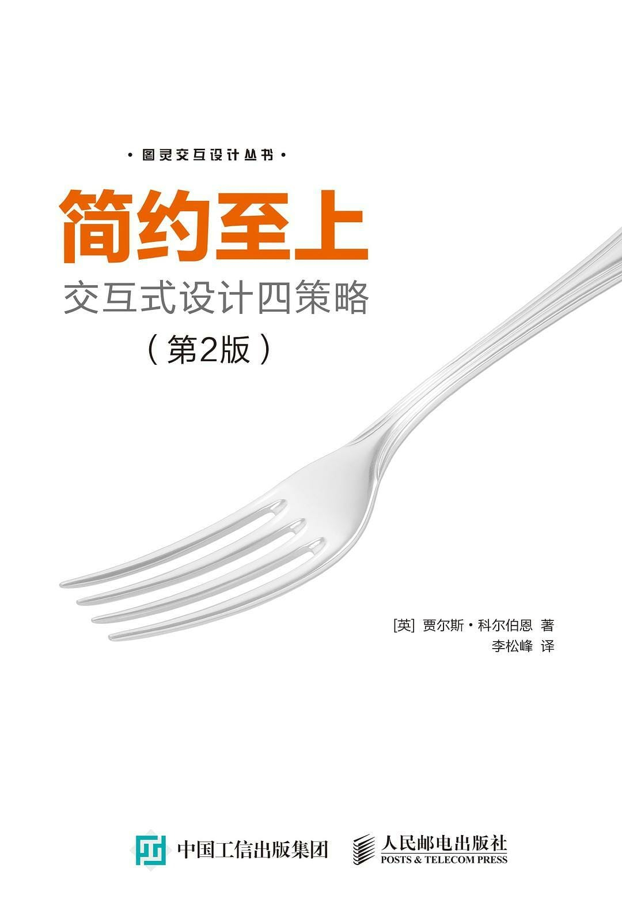

注：【】部分为笔者心得，非原文摘抄。
- 【不要用模棱两可的语言来推广自己的理念。】
- 夸耀效用原理：人们喜欢自己被包围在不必要的功能中。
- 增加的功能越多，就越难发现真正对用户有价值的新功能。
- 在做技术产品的设计时，至少有三个角度：管理人员、工程师和用户。
- 只有脱离了专家的掌控并以广大用户为念，技术才会真正变得有意思起来。
- 简单并不意味着最少化。
- 简单并不意味着欠缺或低劣，也不意味着不注重装饰或者完全赤裸裸。而是说装饰应该紧密贴近设计本身，任何无关的要素都应该予以剔除。——Paul Jacques Grillo
- 大多数用户根本不会看使用说明，他们只想拿过来就用。
- 长期坚持理解用户生活的世界，理解他们的偏好和行为，始终都是第一位的。
- 先理解用户，再考虑合适的设计。
- 无法控制用户使用产品的环境，而只能是产品设计符合环境需求。
- 用户体验应该简单到不受干扰的影响，能够在人们被打断的间隙生存。
- 有时候，最好对专家型用户视而不见。
- 专家想要的功能往往会吓倒主流用户。
- 想吸引大众就必须关注主流。
- 简单的用户体验是初学者、新手的体验，或者是压力之下的主流用户的体验。
- 理解情感需求能够帮你把我设计重点。
- 简单就是感觉在掌控一切。
- 不能遗漏用户体验过程中的任何一个步骤。
- 【在一套连贯的用户体验中，任何一个环节都是关键的。】
- 与一堆需求描述相比，故事可以让读者更容易明白什么重要和为什么重要。
- 故事应该用三言两语把核心体验表达出来。
- 不要担心故事的表现形式，关键是把你的所有约束条件付诸文字。
- 好的用户故事应该简明、具体、可信，并且拥有相关细节。
- 很多复杂的设计都是因为没有考虑到现实世界的压力而导致的，或是因为设计者期望用户自己能够应付一切，或是因为他们不小心漏掉了某个重要的环节。
- 什么是简单的体验？能够适应极端条件。
- 简单性的目标：
- 任何人都可以使用；
- 毫不费力地使用；
- 瞬间响应；
- 一目了然；
- 始终工作；
- 不出错；
- 恰好够用的信息；
- 在混乱无序的环境中工作。
- 尽可能用最简单的词汇描述你的想法。
- 验证你的想法意味着还要花更多时间观察现实中的人，通常可以使用原型或者竞争性产品作为辅助。只有通过验证，才能知道你的见解到底有没有价值。
- 花点儿时间观察和研究你的故事背后的数据。
- 评估你的故事并追问：什么因素对用户的行为影响最大？
- 不要匆忙着手设计。理解核心问题需要时间。
- 让最核心的理念随处可见，提醒人们时刻谨记。随时随地使用，让它成为人们时刻不忘的追求。把它公之于众，意味着团队所有成员都知道自己应该交付什么样的功能。
- 简化设计最明显的方式就是删除不必要的功能。
- 保证只交付那些真正有价值的功能和内容。
- 增加价值始于改进核心体验。
- 在描绘用户故事时，别忘了寻找常见的挫折和难题。
- 与新增功能相比，客户更关注基本功能的改进。
- 删掉实现得不够理想的功能也是很重要的。
- 不要简单地因为客户要求就增加功能。
- 不要害怕对增加产品功能的要求说不。
- 要倾听客户的意见，但决不能盲从。
- 如果一个小的变化导致了复杂的流程，就应该退一步去寻找更好的解决方案。
- 功能多对于没有机会试用的消费者有吸引力。但是，在消费者使用了产品之后，他们的偏好就会改变，一下子从重视功能变成了更重视可用性。
- 产品如果承载过多的功能，很有可能降低主流用户的满意度，从而对产品的长期盈利能力造成损害。
- 在确定什么功能该保留，什么功能该删除的时候，遵循如下原则：
- 确定用户想要达到的目的，并排定优先次序；
- 专注于寻找能够完全满足优先级最高的用户需求的解决方案；
- 确定用户在使用产品过程中最常见的干扰源，并将解决这些问题的功能按难易程度排出优先次序；
- 要知道能够满足主流用户的“足够好”的产品与只有专家才看得上眼的“精准的”产品有什么区别。
- 不要以功能的多寡来认定产品的价值，应该看产品能否满足用户最高优先级的目标。
- 人在处理信息、学习规程和记忆细节方面的能力是有限的。
- 界面元素优化：
- 删除没人会看的文字；
- 简化布局；
- 去掉重复的链接；
- 精简按钮和链接的样式；
- 减少广告位和广告数量；
- 去掉分散注意力的元素。
- 去掉那些可有可无的选项、内容和分散人们注意力的玩意儿，可以减轻用户的负担，让用户专心去做自己想做的事。去掉分散注意力的视觉元素，可以让用户感觉速度更快，而且更加有安全感。
- 选择过多很容易让用户无所适从。
- 如果想设计简单的用户体验，就该牢记删除那些干扰因素，让用户注意力保持集中。
- 选择聪明的默认值可以减少用户的选择。
- 默认值是节省用户时间和精力的有效方式。
- 主流用户不喜欢为设置选项费心劳神。
- 消除错误是简化用户体验的一个方面。
- 删除视觉混乱的元素意味着人们必须处理的信息变少了，能够把注意力集中到真正重要的内容上。
- 多余的文字通常是浪费，因此要减少不必要的说明。
- 【简约的设计是让用户更有效率地使用产品，而要达到这样有效率的使用水平又不需要明显的学习曲线。】
- 如果你想通过组织的方式来简化设计，要记住最重要的一点是只强调一两个最重要的主题。
- 组织往往是简化设计的最快捷方式。
- 围绕行为进行组织，因为人们一般都希望按照某种特定的步骤做事。
- 如果你想设计简单的用户体验，那么最好先对内容有效地组织，然后再考虑设计搜索。
- 按照时间来组织活动是一种简单又通用的方式。
- 利用不可见的网格来对其界面元素，是吸引用户注意力的一种有效方式。
- 在确保人们会花很长时间学习，而且他们会重复使用你的设计时，色标系统非常适合。
- 简单的组织，意味着你在使用软件时会对什么感觉不错，而不是你在规划中看到了什么逻辑，因为人们不总是走你为他们铺好的路。
- 隐藏不常用但又不能缺少的功能。
- 一般来说，不应该让用户去自定义他们的软件。
- 对于用户期望的功能，要在正确的环境下给出明确的提示。
- 在流程中的每一步都符合用户心理预期的情况下，阶段展示的效果最好。
- 什么叫成功的隐藏：首先，尽可能彻底地隐藏所有需要隐藏的功能；其次，只在合适的时机、合适的位置上显示相应的功能。
- 把标签放在哪里比把标签做多大要重要得多。
- 保证用户在前进的过程中能够遇到提示，但不要挡住他们的去路。
- 使用隐藏策略必须做到以下几点：
- 隐藏一次性设计和选项；
- 隐藏精确控制选项，但专家用户必须能够让这些选项始终保持可见；
- 不可强迫或寄希望于主流用户使用自定义功能，不过可以给专家提供这个选项；
- 首先是彻底隐藏，其次是适时出现。
- 只要不让人找太久，隐藏就是有效的。
- 设计简单体验的一个秘密，就是把正确的功能放在正确的平台或者正确的系统组件中去。
- 【用正确的设备做正确的事。】
- 让用户感觉简单的一个重要前提，就是先搞清楚把什么工作交给计算机，把什么工作留给用户。
- 把相似的功能绑定到一起。
- 简单界面的最高境界，应该是专家和主流用户都会感觉它非常好用。
- 开放性界面的秘诀在于，尽量减少仅适合中级用户的“便捷”特性。
- 让计算机负责完成数据的结构化工作，用户体验就会简单多了。
- 【引导用户而不是控制用户。】
- 构筑信任关系的唯一方式，就是让用户参与测试原型或实物模型。
- 创建简单用户体验的秘诀就在于把复杂性转移到正确的地方，让用户每时每刻都能感受到简单之美。
- 简单通常要有细节来支撑。
- 不要让你的设计干扰用户的思绪。
- 简单的设计能够为用户流出足够的空间，他们会用自己的生活来填充这些空间，从而创造出更丰富、更有意义的体验。